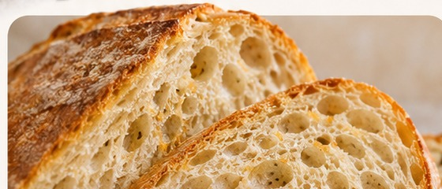
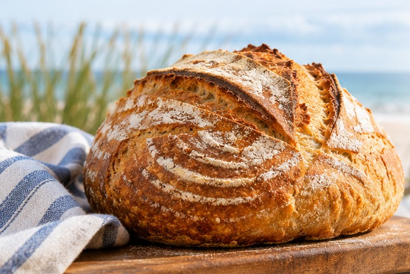
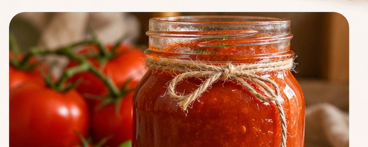

A little something homemade
Good food.
Made with care.
Welcome to Stacey's Coastal Crumb, where small-batch sourdough and homemade tomato sauces bring a little homemade goodness to your table.

Fresh from our kitchen
What we're making
Choose a category to explore the menu and place your order.

Rich · Homemade · Full of flavor
Tomato Sauce
Homemade sauces, ready to bring everyone to the table.
Order Tomato SauceQuality Ingredients
Simple, thoughtful ingredients in every batch.
Small Batch
Made with care, not mass-produced.
Coastal Inspired
Local flavor with a homemade touch.